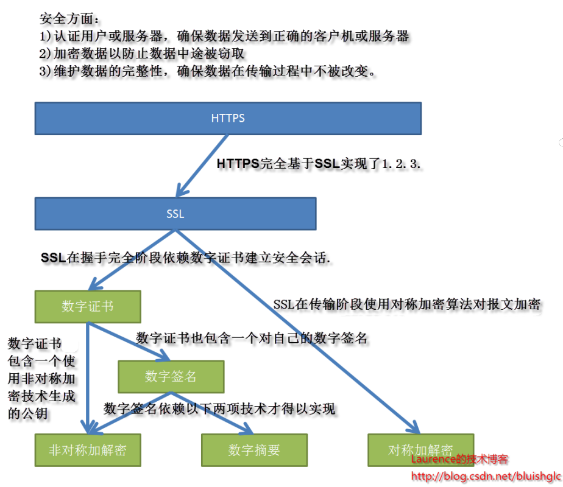
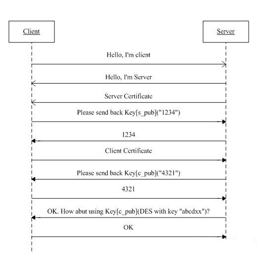

和安全有关的那些事(非对称加密、数字摘要、数字签名、数字证书、SSL、HTTPS及其他)
本文原文连接：https://laurence.enlightgram.com/security/encryption-signature-certificate-ssl-https/ 转载请注明出处！
对于一般的开发人员来说，很少需要对安全领域内的基础技术进行深入的研究，但是鉴于日常系统开发中遇到的各种安全相关的问题，熟悉和了解这些安全技术的基本原理和使用场景还是非常必要的。本文将对非对称加密、数字摘要、数字签名、数字证书、SSL、HTTPS等这些安全领域内的技术进行一番简要的介绍，解释他们之间的关系，同时补充一些周边话题。
0. 概览–常用安全技术及其之间的关联
安全领域的技术众多，但是归根结底，他们都是为了保障如下三个方面：
1）认证用户和 服务器 ，确保数据发送到正确的客户机和服务器
2）加密数据以防止数据中途被窃取
3）维护数据的完整性，确保数据在传输过程中不被改变。
在我们正式开始对每一项技术进行介绍之前，让我们先有一个宏观的认识，下图罗列我们将要涉及的安全技术以及它们之间的关联。

图1.安全技术堆栈
- 从非对称密钥加密与数字摘要技术谈起。
1.1 什么是“非对称密钥加解密”技术
对于一份数据，通过一种算法，基于传入的 密钥 (一串由数字或字符组成的字符串,也称“key”），将明文数据转换成了不可阅读的密文，这是众所周知的“加密”，同样的，密文到达目的地后，需要再以相应的算法，配合一个密钥，将密文再解密成明文，这就是“解密”。如果加密和解密使用的是同一个密钥,那么这就是“对称密钥加解密”（最常见的对称加密算法是DES）。如果加密和解密使用的是两个不同的密钥，那么这就是“非对称密钥加解密”（最常用的非对称加密算法是RSA）。这两个不同的密钥一个叫作公开密钥（publickey）另一个叫私有密钥（privatekey），公开密钥对外公开，任何人均可获取，而私有密钥则由自己保存，其实公钥和私钥并没有什么不同之处，公钥之所以成为公钥是因为它会被公开出来，产生任意份拷贝，供任何人获取，而只有服务主机持有唯一的一份私钥，从这种分发模式上看，我们不难看出其中的用意，这种分发模式实际上是Web站点多客户端(浏览器)与单一服务器的网络拓扑所决定的，多客户端意味着密钥能被复制和公开获取，单一服务器意味着密钥被严格控制，只能由本服务器持有，这实际上也是后面要提到的之所以能通过数据证书确定信任主机的重要原因之一。如果我们跳出web站点的拓扑环境，其实就没有什么公钥与私钥之分了，比如，对于那些使用以密钥为身份认证的SSH主机，往往是为每一个用户单独生成一个私钥分发给他们自己保存，SSH主机会保存一份公钥，公钥私钥各有一份，都不会公开传播。
1.2 什么是“数字摘要“
这个非常简单，我们在 下载 文件的时候经常会看到有的下载站点也提供下载文件的“数字摘要“，供下载者验证下载后的文件是否完整，或者说是否和服务器上的文件”一模一样“。其实，数字摘要就是采用单项Hash函数将需要加密的明文“摘要”成一串固定长度（128位）的密文，这一串密文又称为数字指纹，它有固定的长度，而且不同的明文摘要成密文，其结果总是不同的，儿同样的明文其摘要必定一致。 因此，“数字摘要“叫”数字指纹“可能会更贴切一些。“数字摘要“是https能确保数据完整性和防篡改的根本原因。
- 数字签名–水到渠成的技术
让我们来看看有了“非对称密钥加解密”和“数字 摘要 “两项技术之后，我们能做些什么呢？假如发送方想把一份报文发送给接收方，在发送报文前，发送方用一个哈希函数从报文文本中生成报文摘要,然后用自己的私人密钥对这个摘要进行加密，这个加密后的摘要将作为报文的”签名“和报文一起发送给接收方，接收方首先用与发送方一样的哈希函数从接收到的原始报文中计算出报文摘要，接着再用发送方的公用密钥来对报文附加的数字签名进行解密，如果这两个摘要相同、那么接收方就能确认报文是从发送方发送且没有被遗漏和修改过！这就是结合“非对称密钥加解密”和“数字摘要“技术所能做的事情，这也就是人们所说的“数字签名”技术。在这个过程中，对传送数据生成摘要并使用私钥进行加密地过程就是生成”数字签名“的过程，经过加密的数字摘要，就是人们所说的”数字签名“！
数字签名技术就是对“非对称密钥加解密”和“数字摘要“两项技术的应用，它将摘要信息用发送者的 私钥 加密，与原文一起传送给接收者。接收者只有用发送者的公钥才能解密被加密的摘要信息，然后用HASH函数对收到的原文产生一个摘要信息，与解密的摘要信息对比。如果相同，则说明收到的信息是完整的，在传输过程中没有被修改，否则说明信息被修改过，因此数字签名能够验证信息的完整性。(注意，数字签名只能验证数据的完整性，数据本身是否加密不属于数字签名的控制范围)
综上所述，数字签名有两种功效：一是能确定消息确实是由发送方签名并发出来的，因为别人假冒不了发送方的签名。二是数字签名能确定消息的完整性。
- 数字证书–值得信赖的公钥
只从”准确认证发送方身份“和”确保数据完整性“两个安全方面来看，数字签名似乎已经完全做到了，还有漏洞存在的可能么？有，漏洞不在数字签名技术本身，而在它所依赖的密钥，只有密钥是真实可靠的前提下，使用数字签名才是安全有效的。考虑这种可能的情况：在上述发送方向接收方传送报文的例子中，如果发送方所持有的 公钥 来路有问题或是被替换了，那么，持有对应私钥的冒充接受方就有可能接收到发送方发送的报文。这里的问题就是：对于请求方来说，它怎么能确定它所得到的公钥一定是从目标主机那里发布的，而且没有被篡改过呢？亦或者请求的目标主机本本身就从事窃取用户信息的不正当行为呢？这时候，我们需要有一个权威的值得信赖的第三方机构(一般是由政府审核并授权的机构)来统一对外发放主机机构的公钥，只要请求方这种机构获取公钥，就避免了上述问题的发生。这种机构被称为证书权威机构（Certificate Authority, CA），它们所发放的包含主机机构名称、公钥在内的文件就是人们所说的“数字证书”。
数字证书的颁发过程一般为：用户首先产生自己的密钥对，并将公共密钥及部分个人身份信息传送给认证中心。认证中心在核实身份后，将执行一些必要的步骤，以确信请求确实由用户发送而来，然后，认证中心将发给用户一个数字证书，该证书内包含用户的个人信息和他的公钥信息，同时还附有认证中心的签名信息。用户就可以使用自己的数字证书进行相关的各种活动。数字证书由独立的证书发行机构发布。数字证书各不相同，每种证书可提供不同级别的可信度。可以从证书发行机构获得您自己的数字证书。（本段摘自百度百科）
关于数字签名与数字证书的解释和差异，这里有一篇非常优秀的文章，介绍得浅显易懂：
中文译文： http ://www.cnblogs.com/heart-runner/archive/2012/01/30/2332020.html
英文原文：http://www.youdzone.com/signature.html
- SSL
当所有上面提及的技术介绍完之后，我们需要把它们统一起来应用于实际的网络安全传输了，因此，人们制定了一套 协议 ，来定义有关的方方面面，这个协议就是SSL。SSL建立通信的过程分为两个阶段：握手阶段和传输阶段，关于握手机制，在此不再赘述，网上有非常细致的介绍，此处仅贴出一张简单的示意图：

图2.SSL握手阶段示意图
值得特别提出的是：SSL协议在握手阶段使用的是非对称加密，在传输阶段使用的是对称加密，也就是说在SSL上传送的数据是使用对称密钥加密的！这并不奇怪，因为非对称加密的速度缓慢，耗费资源。其实当客户端和主机使用非对称加密方式建立连接后，客户端和主机已经决定好了在传输过程使用的对称加密算法和关键的对称加密密钥，由于这个过程本身是安全可靠的，也即对称加密密钥是不可能被窃取盗用的，因此，保证了在传输过程中对数据进行对称加密也是安全可靠的，因为除了客户端和主机之外，不可能有第三方窃取并解密出对称加密密钥！
4.1 SSL保证了哪些网络安全中的哪些方面？
SSL协议主要确保了以下安全问题：
1）认证用户和服务器，确保数据发送到正确的客户机和服务器
2）加密数据以防止数据中途被窃取
3）维护数据的完整性，确保数据在传输过程中不被改变。
(关于SSL是如何确保数据完整性这一点，目前我还不清楚其具体是如何实现的，因为关于SSL在传输过程中是否使用了数字签名，我目前还没有找到确切的答案。)
5.HTTPS
如果我们是在一开始来讲述HTTPS协议，那将会是一个很大的话题，但是讲到这里的时候，实现上所有关于HTTPS的内容，我们基本上已经讲完了，它所有依赖的所有安全技术就是上面我们所提及的，就像大家所知道的那样，HTTPS是由SSL+HTTP协议构建的可进行加密传输、身份认证（确认客户端连接的目标主机是否是真实正确的主机）的网络协议。https所能实现的安全保证，正是SSL所能解决的安全问题，见上一节。
5.1 HTTPS的劣势
https的主要缺点就是性能问题。造成https性能低于http的原因有两个：
1.对数据进行加解密决定了它比http慢。
2.另外一个重要原因的是https禁用了缓存。
相关测试数据表明使用HTTPS协议传输数据的工作效率只有使用HTTP协议传输的十分之一。因此对于一个网站来说，只有那对那些安全要求极高的的数据才会选择使用https进行传输。
6.周边话题
6.1 网络安全和应用程序的安全控制两者之间有什么关系？
网络安全和一个应用程序自身的安全控制之间并没有太多直接的交集，应该说两者的关注点不在一起，前者主要解决的是“传输过程”中的安全问题，即确认信任主机和防止泄密及篡改。而一个应用程序的安全控制是指在请求到达后，应用程序自身对请求进行的安全检查，这种“检查”主要涉及两个方面：Authentication和Authorization，这也是所有应用程序安全控制方面要完成了两个重要任务。关于Authentication和Authorization,详细一点说，Authentication就是：
一.从访问者提交的身份信息中，确认当前的访问者是否是本系统的合法的用户，也就是对访问者进行“身份认证”。说得更直白些就是，核实一下当前这个访问者是不是我的用户，是就让他访问，不是就拒绝。所以说，我们一般的系统登录过程就是一个“Authentication”的过程！
二.对用户的访问进行控制，也就是控制用户可以执行哪些操作，不能执行哪些操作。对于一般的系统来说，也就是根据用户的角色或权限，确定用户能访问哪些页面，不能访问哪些页面。
和安全有关的那些事(非对称加密、数字摘要、数字签名、数字证书、SSL、HTTPS及其他)
https://laurence.enlightgram.com/security/encryption-signature-certificate-ssl-https/